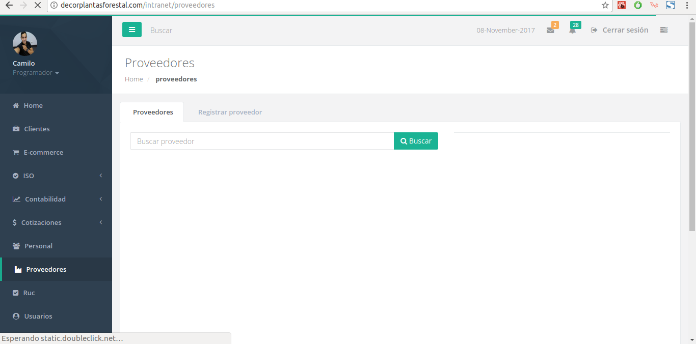

Andrés Camilo Arias Martinez
Desarollador de software- github.com/CamiloArias47
- 📧 camillo47@gmail.com
- 📞 3188492936
- 🎂 9 septiembre 1993
- 📍 Cali - Colombia
Acerca de mi
Soy una persona responsable y apasionada por lo que hace. Me dedico al desarrollo Web y siempre quiero aprender y adquirir nuevas experiencias en esta industria.
Perfil profesional
Soy desarrollador Web con 5 años de experiencia en la industria, he liderado y he sido parte de
proyectos donde he escrito código para medios de comunicación y empresas dedicadas a la
prestación de servicios, en ellas he aportado mis conocimientos en HTML, CSS, JavaScript, Php, React, Laravel, Symfony, NextJs.
Optimice el rendimiento del portal de noticias elpais.com.co de un 12% a un 70% según las métricas de PageSpeed de Google
con esto mejoré el posicionamiento en las búsquedas de Google.
Experiencia laboral
-
2019 - hoy
Diario El País
- He liderado el proyecto para transicionar el portal elpais.com.co de una pagina adaptativa a un sitio responsivo.
- Optimice el rendimiento del sitio para mejorar el seo del portal y posicionar mejor en las búsquedas de Google, aplique técnicas como lazy load de imágenes, css critico y carga diferida de javascript.
- Doy mantenimiento al backend (Symfony) cuando surgen errores.
-
2016 - 2019
Decorplantas Forestal
- Cree un Erp a la medida de Decorplantas Forestal para la gestión empresarial.
- Hice uso de Laravel para el desarrollo de esta Erp y algunos componentes en React

Otros proyectos
Actualmente estoy aportando con mis conocimientos de programación Web
a un emprendimiento familiar llamado koi makeup,
específicamente es un ecommerce de cosméticos,
el proyecto lo estoy realizando usando tecnologías
como NextJs, React y Firebase.
Demo: koishop.vercel.app
Habilidades
A lo largo de mi carrera he adquirido experiencia con Framework Php como lo son Larave y Symfony. Tengo conocimientos en ReactJs y un gran potencial en este ya que me motiva mucho mantener aprendiendo sobre frontend y especialmente de ReactJs.
Educación
-
Tecnología De Sistemas - Univesidad del valle
Actualmente en curso en lajornada nocturna
-
Técnico en programación de software - Sena